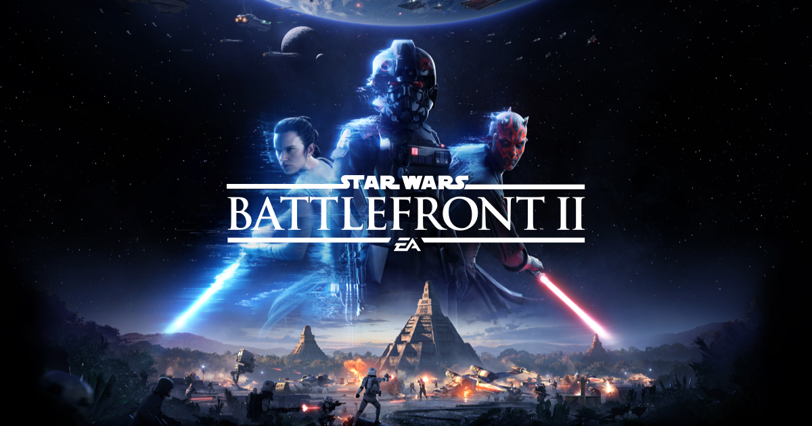
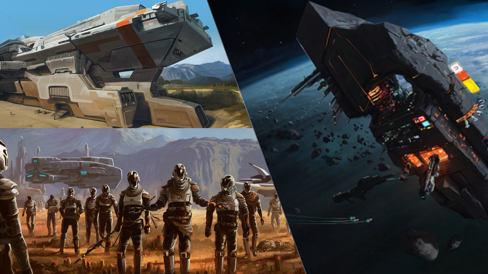
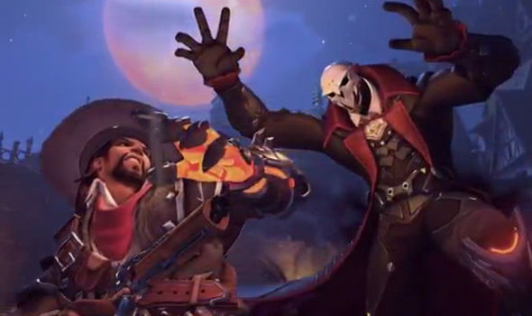

Battlefront 2
4-10-2017

Fans die op tijd de nieuwe Star Wars-game hebben besteld, kunnen vanaf nu de closed beta downloaden en spelen.
De beta is beschikbaar voor de PlayStation 4, Xbox One en PC. De beta is vandaag (4 oktober) vanaf 10:00 online gegaan. Hiervoor moet je wel de game hebben besteld. Mocht je dit niet hebben gedaan, dan komt er op 6 oktober een open beta uit. Deze start op die dag om 09:00 uur. Het is helaas niet mogelijk om de beta te pre-loaden. Je zult dus moeten wachten tot de release voordat je de game binnen kan halen.
Star Wars: Battlefront 2 is vanaf 17 november 2017 beschikbaar voor PlayStation 4, Xbox One en PC
Dual Universe
4-10-2017

Vandaag is de er aankondiging gemaakt voor Dual Universe voor de Open Pre-Alpha. De game is een open world MMO waarbij het mogelijk is om de ruimte in te gaan.
Het spel is verwacht om in 2018 uit te komen voor PC.
Overwatch
4-10-2017

Overwatch krijgt vanaf 10 oktober een Halloween event. Dat heeft Blizzard laten weten via Twitter.
Het event zal een aantal nieuwe skins en een nieuwe map naar de game brengen. De details zijn nog niet bekendgemaakt, maar de ontwikkelaar heeft een korte teaser vrijgegeven. In de teaser zien we McCree en Reaper die het tegen elkaar opnemen. We zien ook dat zij dit doen op een nieuwe map. Tot slot zien we Junkrat met zijn Halloween skin van vorig jaar.